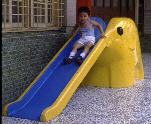
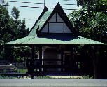

呂清夫 撰文

一個家庭需要傢具，一個城市也需要傢具，傢具的美醜可以反映主人的品味，傢具的規模也可以顯示主人的貧富。台北市號稱國際的大都市，但是若從街道傢具（street furniture）的角度看去，台北不是很窮，就是很沒有品味。舉個例說，台北街頭就難得看到公車候車亭，容或偶爾看到一兩個，也是租陋不堪，遮不了風雨。我們不去比先進國家，比比韓國泰國就好。漢城不但有公車候車亭，更有計程車的候車亭，大家坐計程車之所以能處處乖乖地排隊等計程車，舒適的候車亭恐怕是先決條件之一，當然警察權威與公共道德的建立也是原因。在曼谷，候車亭做得更為漂亮，或做摩登的幾何造形，或做傳統式的涼亭，屋頂寬而低，不比台北的高而窄，一有風雨，便形同虛設。
曼谷的候車亭不但漂亮，而且常在綠樹掩映之中，看來格外舒服。一到夜間，更是燈火通明，因為候車亭常配有大型的廣告照明，不過都秩序井然，設計新穎，反而變成一種極好的裝飾。泰國鄉下的候車亭也做得有板有眼，由於隨處可見，設計又是廟宇似的涼亭（見左圖），讓觀光客誤以為都是鄉間小廟，仔細看才知道這些「小廟」之中莫不有人俯仰自得，如在郊遊。在烈日當空，黃沙滾滾的鄉道上，造這些候車亭實在勝造七級浮屠。在台灣，不但都市少見，鄉間更少候車亭。涼亭之類似乎只配公園才有。看看泰國的例子，我們似乎也可以改改觀念，把涼亭搬到馬路邊去吧，有車階級可以要求昂貴的停車場，公車階級也應該有權要求區區的候車亭吧！據報載，市政府為了迎接區運會，正在各個競賽場地建設亭子式的所謂「精神堡壘」高達七公尺。看到這種亭子，我第一個就想到泰國的候車亭。同樣是亭子，對市民來講，做成候車亭應此做成「精神堡壘」更為實惠，因為候車亭每人每天都要用到，而「精神堡壘」則不知有多少人，有多少時間會去「看」它？做得又是那麼高大，區運會過後，不知這些「堡壘」要怎麼處置？看到這些「堡壘」，我二個想到的是台灣怎麼沒有海報塔，而在後進的泰國卻赫然有之，而且是歐洲式的，可以集中管理海報的張貼。台灣色情海報之所以泛濫應與欠缺海報塔有關，由於海報無處貼，只好到處貼。不然要貼在哪裏？至於守法的正當海報，由於無處可貼，只有乾脆死心不做了。因之，台灣的海報設計若與先進國家相比，就顯得很不發達，倒是色情海報反而一枝獨秀。在此，我不得不覺得，與其多設臨時的「精神堡壘」，不如廣設永久的海報塔。台灣交通紊亂，世所詬病，其間交通標誌的亂而不足也是個原因。譬如說，台灣的車禍發生在學童身上的比例常居最高，但是「當心兒童」的交通標幟普遍不足。在日本，任何巷口墾上有牌子，要慎防小孩子衝出來，牌子上還畫有小孩子橫衝直撞的圖案，表示小孩子不長眼睛，開車子可要張太眼睛。另外，日本鄉道兩旁常可看到一些「替身」警察，亦即由於警力不足，常畫有一些警察圖像的牌子，立於道旁。讓駕駛人時時意識到警察，夜間一看也真像警察，從而提高警覺，不亂開車。像這一類別出心裁的交通標幟，我們似乎很少見。我們如果上了高速公路，則給人印象最深的是，交通標誌上的英文寫得特別大。但在外國人進出更多的曼谷，則英文寫得相當小，有些地方根本不附英文。這不是什麼民族主義的問題，而是外國人在本地開車畢竟較少。為了安全，標誌總是越簡單明瞭越好，不必太太的英文字來攪局。隨著時代的進步，大家對於公共建設的要求必然越來越細，他如街頭地圖、街燈街椅、噴泉雕刻、行人徒步區、腳踏車停放架、乃至公廁垃圾桶……等等莫不多多益善，越美越好，比起大型的體育場來，這些街頭傢具可謂本少利多，更值得重視。